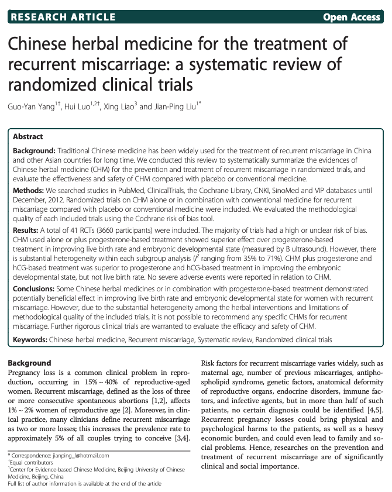

반복된 경험을 세심하게 듣고 검토합니다.
- 01기존 검사
- 02임신과 유산 이력
- 03다음 진료 계획
| 구분 | 살펴볼 점 | 알려주실 내용 |
|---|---|---|
| 반복 유산의 치료와 착상탕 | 관련 안내와 진료 과정 | 궁금한 점과 기존 진료 경험 |
| I 반복유산, 한의학이 돕습니다. | 관련 안내와 진료 과정 | 궁금한 점과 기존 진료 경험 |
궁금한 항목을 펼쳐보세요.
필요한 설명과 자료를 주제별로 확인할 수 있습니다.
01반복 유산의 치료와 착상탕＋
반복 유산의 치료와 착상탕
'원칙을 지키며 전통을 이어갑니다'
02I 반복유산, 한의학이 돕습니다.＋
I 반복유산, 한의학이 돕습니다.
습관성 유산.. 반복 유산..
의학적으로 재발성 자연유산(recurrent spontaneous abortion), 반복 유산(recurrent abortion), 재발성 임신손실(recurrent pregnancy loss), 습관성 유산(habitual abortion)등이 혼용되며 2회 또는 3회이상을 포함하는지에 따라 약간씩 정의내용도 다릅니다.
전통적으로는 임신 20주 이전의 2회 이상의 유산을 경험하면 반복 유산으로 정의합니다.
원인으로는 부모의 유전적인 요소, 해부학적이상, 항인지질항체, 내분비질환, 감염, 환경요인 등 다양하게 생각하고 있으나 절반가량은 원인불명으로 알려져있습니다.
한의학에서 반복 유산은 활태滑胎라고 해서 완전히 익지 않은 열매가 미끄러져 떨어지는 것에 비유해서 설명합니다.
열매 자체가 이상이 있을 수도 있고, 외부환경에 의해 자극으로 떨어질 수도 있고, 나무에서 충분한 영양공급을 받지 못해서 있 수도 있죠.
열매가 잘 성숙하기 위해서는 튼튼한 씨앗이 잘 자라기 위한 토양이 갖추어져야 하며, 외부의 자극에 잘 방어를 해야하고, 충분한 영양을 지속적으로 주어야 합니다.
반복 유산, 습관성 유산, 즉 활태는 현대의학적으로 원인 불명이 반 가까이 된다고 말하지만 결국 충분한 몸 상태를 조금 더 적극적으로 가꾸어 가는 것이 치료의 지름길이 된다는 것을 생각해볼 수 있습니다.

I 착상탕, 안태를 도와주는 한약
착상탕, 유산방지한약 등으로 불리우는 유명한 한약이 있습니다.
시령탕, 안태음, 궁귀조혈음 등이 대표적입니다.
난임 치료를 위해 병원외래로 내원하는 환자의 나이가 점점 높아지는 것은 널리 알려져 있습니다.
치료 한계 나이라고 말하는 35세 이상의 나이도 이제는 '보통'으로 여겨지고도 있습니다.
35세 이상인 분들에게 가장 많은 불임 원인은, 난소의 노화로인해 여성호르몬의 분비저하, 난자의 질의 저하를 들 수 있습니다.
난포 발육이 좋지 못한 환자에 대해서 클로미펜을 투여하는 방법이 있지만 그 부작용에 의해 자궁내막이 얇아지고, 그로 인해 임신이 더 되지 않는 딜레마에 빠지게 됩니다.
일본에서는 통원치료를 받는 불임질환환자에게 착상탕의 일종인 시령탕을 투여하고 난 후 임신율과 자궁내막에 대한 영향을 검토한 결과 임신율이 상승한다는 보고가 있습니다.
I 시령탕의 착상 유지 효과
연구 결과 | 클로미펜 복용환자 전체(25례)의 임신률은 32%, 임신한 증례의 평균연령은 36.9±3.2세, 유산율은 15.4%였습니다. 클로미펜 복용환자군 중에서 시령탕 복용군의 임신률은 40%, 시령탕 비복용군의 임신률은 20%였습니다. 시령탕 내복환자 전체(28례)의 임신률은 39.9%, 35세이상의 임신률은 30%였습니다. 전체 시령탕 복용기간은 평균 3.9± 2.7개월, 임신된 증례의 시령탕 복용기간은 평균 4.4 ± 2.8개월이었습니다. |
시령탕의 의의 | 일본에서는 고령(35세 이후 임신이 확인된 여성)에게 착상 유지를 위해 한약을 루틴하게 처방합니다.시령탕은 소시호탕과 오령산의 합방입니다. 소양병기에 대해 시호는 소양을 통창通暢하고 동시에 소양반표반리의 사기 를 외부로 내보내며, 황금은 소양의 울열과 울체되어 변화한 담화를 청열하며, 반하와 생각은 화위강역, 인삼, 감초, 생강은 보중익기하며, 사기를 외부로 보내는 것을 도와준다고 알려져있습니다. |
진료 전, 세 가지만 준비해 주세요.
증상의 기록
가장 불편한 점과 시작한 시점, 반복되는 상황을 알려주세요.
검사와 치료 이력
기존 검사 결과와 복용 중인 약을 함께 확인합니다.
꼭 묻고 싶은 질문
치료 목표와 생활관리 등 궁금했던 점을 편하게 이야기해 주세요.
이 안내는 건강에 대한 이해를 돕는 참고 정보입니다. 증상과 질환에 대한 정확한 판단은 의료진의 진료가 필요합니다.